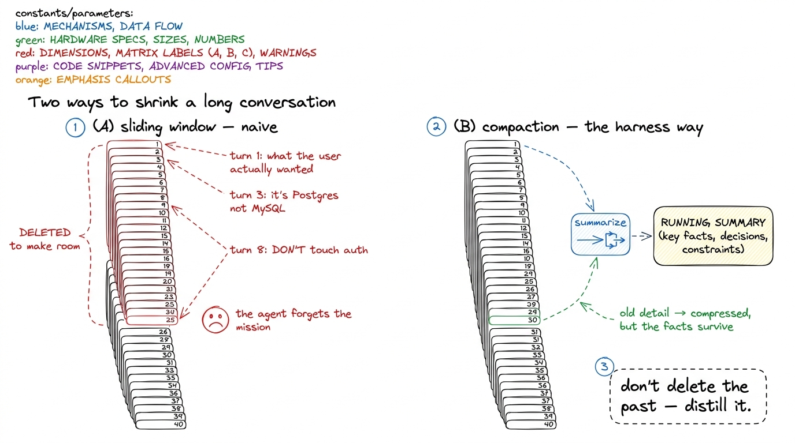
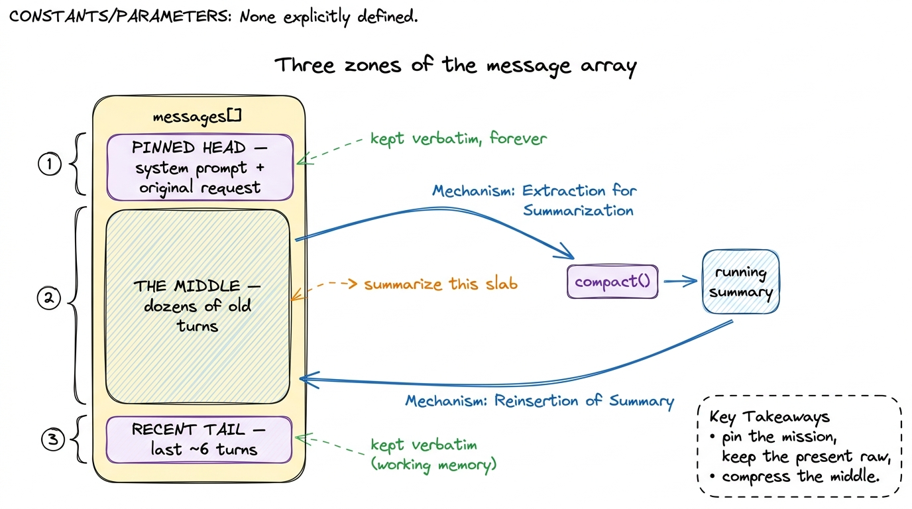
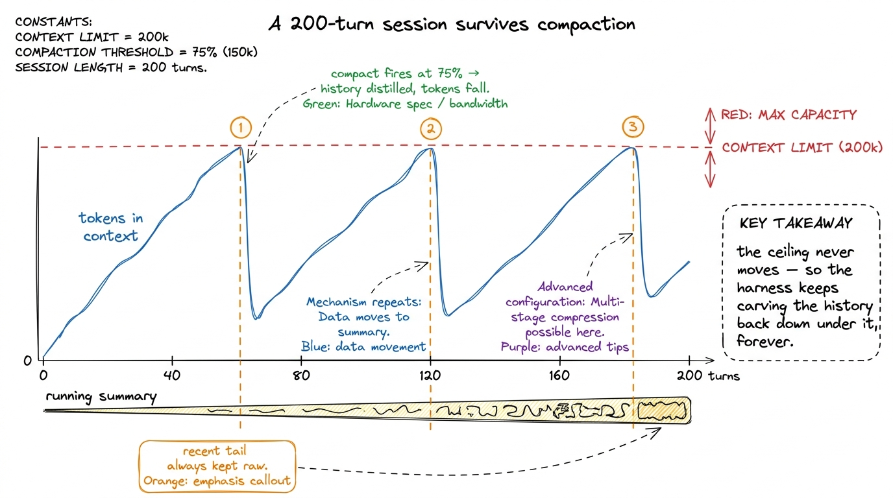
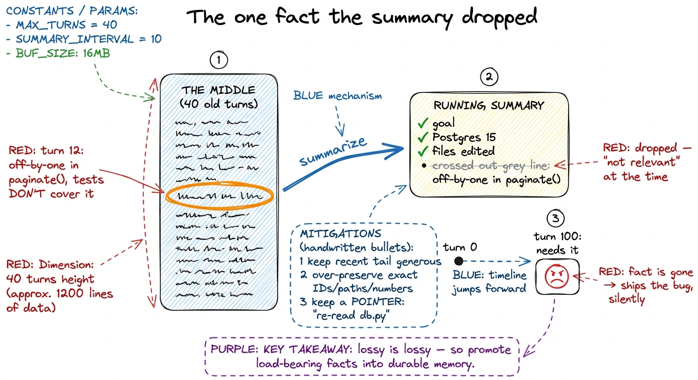

Compaction & summarization
Here is a failure mode you will hit the very first time you use your harness for real work. You ask it to do something big — refactor a module, chase a bug across ten files, wire up a feature — and it goes beautifully for a while. Twenty tool calls in, forty, sixty. Then, quietly, it gets dumber. It re-reads a file it read half an hour ago. It forgets the constraint you gave it in the first message. It re-introduces a bug it already fixed. Nothing crashed, no error was raised — the agent just lost the plot.
What happened is not mysterious once you know where to look. Every lap of the loop appends to the message array: the model's reply, the tool call, the tool result, over and over. That array is the agent's entire memory, and it grows without bound. Meanwhile the context window is a fixed budget — a few hundred thousand tokens, and not one more. A long session is a slow-motion collision between an ever-growing history and a wall that does not move. This chapter is about surviving that collision. The technique has a name: compaction.
The naive answer, and why it's wrong
The obvious fix is to just drop old messages. Conversation too long? Delete the oldest turns until it fits. This is called a sliding window, and it is exactly what a naive chatbot does.
It is a disaster for a coding agent, and it's worth being precise about why. The oldest messages are not the least important — they are often the most important. Turn one is where the user told you what they actually want. Turn three is where you discovered the database is Postgres, not MySQL. Turn eight is where the user said "and whatever you do, don't touch the auth module." Slide the window forward and those facts fall off the back of the truck, silently, while the agent keeps confidently driving. The information the agent most needs to stay coherent is precisely the information a window throws away first.

figure rendering · Sliding a window drops the oldest turns — which are usually the most lSo we do not delete the past. We distill it. We take a big slab of old turns and ask the model itself to write them down as a compact summary — the decisions made, the facts discovered, the constraints given, the state of the work — and we splice that summary back in where the raw turns used to be. The transcript gets short again; the knowledge does not leave. This is the whole idea, and everything below is detail.
When to compact: the threshold
Compaction is not free — you spend a model call to produce the summary, and you lose fidelity — so you don't do it every turn. You do it when you're about to run out of room. The trigger is a threshold on how full the context is.
The measure that matters is not turn count but token count, because turns vary wildly in size (a one-line question versus a 3,000-line file dump). So the harness tracks the running token total of the message array and fires compaction when it crosses some fraction of the window — a common choice is around 70–80% full, leaving comfortable headroom for the summary call and the next few turns.1 Claude Code exposes exactly this as an auto-compact behavior that kicks in as you approach the context limit, plus a manual /compact command you can run whenever you feel the session getting heavy. The threshold is a knob, not a law — tune it to your model's window and your typical turn size.
def tokens_of(messages):
# cheap-and-safe estimate; use the provider's real tokenizer in production
return sum(len(str(m["content"])) for m in messages) // 4
CONTEXT_LIMIT = 200_000
COMPACT_AT = 0.75 # fire when 75% full
def should_compact(messages):
return tokens_of(messages) > CONTEXT_LIMIT * COMPACT_ATTwo honest caveats live in that snippet. First, the // 4 character-per-token estimate is a rough stand-in; a real harness asks the provider's tokenizer, or reads the token usage the API already returns on every response, so it never guesses.2 Every message you get back reports its own token usage. The cheapest, most accurate meter is to just accumulate those numbers as you go — the harness already has the ground truth without doing any counting itself. Second, the threshold is deliberately below 100% — you must leave room to do the compaction and to hold the next turn, or you'll be summarizing right as the wall hits you.
What to preserve verbatim vs. what to summarize
Here is the judgment call at the heart of compaction, and it is genuinely a design decision, not a mechanical one. Not all history deserves the same treatment. We split the conversation into three zones.
The pinned head — always kept verbatim. The system prompt and the original user request never get summarized. They are the mission. If those blur, the agent is lost no matter how good the rest is. So they sit at the front of the array, untouched, forever.
The recent tail — kept verbatim. The last handful of turns are where the agent is right now — the file it just opened, the error it just saw, the half-finished edit. Summarize those and you lop off the agent's working memory mid-thought. So we always keep the most recent N turns raw, exactly as they happened.
The middle — summarized. Everything between the pinned head and the recent tail is the candidate for compression. This is the bulk of a long session: the exploration, the files read and understood, the dead ends, the decisions. We hand this middle slab to the model and ask for a structured summary.

figure rendering · The array splits into three zones: a pinned head (the mission) and a rThe summary itself should be structured, not a vague paragraph. A good compaction prompt asks the model to write down specific categories: the user's goal, key facts learned about the codebase, decisions and their rationale, files touched and how, what's done, and what's still pending. Structure is what keeps the summary from drifting into mush and what makes it useful when it's hydrated back in.
COMPACT_PROMPT = """You are compacting a long agent session to save context.
Summarize the conversation below into a dense, factual briefing. Preserve:
- the user's original goal and any hard constraints
- key facts discovered (versions, file paths, schemas, gotchas)
- decisions made and WHY
- files created/edited and what changed
- what is DONE and what is still PENDING
Be specific. Keep identifiers, paths, and numbers exact. Omit chit-chat.
Write it as notes-to-self the agent can act on cold."""
def compact(messages, keep_recent=6):
head = messages[:2] # system + original request (pinned)
middle = messages[2:-keep_recent] # the slab we compress
tail = messages[-keep_recent:] # recent turns (verbatim)
summary = call_model(
messages=[{"role": "user",
"content": COMPACT_PROMPT + "\n\n" + render(middle)}],
tools=[],
)
summary_msg = {
"role": "user",
"content": f"[SUMMARY OF EARLIER WORK]\n{text_of(summary)}",
}
return head + [summary_msg] + tail # the new, short historyHydrating it back: the agent never notices the seam
The word hydrate is the important half of the technique and the half tutorials forget. Compressing the history is useless if you don't splice the summary back into the live conversation so the next model call actually sees it. That's what the final line does — it returns a new, short message array with the summary sitting in the middle, and the loop keeps running against that array as if nothing happened.
From the model's point of view the seam is invisible. Its next turn sees: the system prompt, the original request, one [SUMMARY OF EARLIER WORK] block that reads like careful notes, and the last few raw turns. It has everything it needs to continue — the mission, the accumulated knowledge, and the immediate present — in a fraction of the tokens. The two-hundredth turn feels, to the model, like the tenth.
Wiring it into the loop is a two-line change: check the threshold at the top of each lap, and compact if we've crossed it.
def run_agent(user_request):
messages = [SYSTEM_MSG, {"role": "user", "content": user_request}]
while True:
if should_compact(messages):
messages = compact(messages) # distill + hydrate, in place
reply = call_model(messages, TOOLS)
messages.append({"role": "assistant", "content": reply.content})
if reply.stop_reason != "tool_use":
return text_of(reply)
messages.append(run_tools(reply)) # append tool results, then loop
figure rendering · Across a long session the token count climbs toward the ceiling; eachThe real risk: summarizing away something crucial
I want to be honest about the sharp edge here, because it is easy to be seduced by how clean compaction looks and miss its one genuine danger. A summary is lossy by definition, and you cannot know in advance which lost detail will turn out to matter.
Picture it. Forty turns ago the agent noticed, in passing, that one function has a subtle off-by-one that the tests don't cover. It wasn't relevant then, so the summary — reasonably, sensibly — left it out. Sixty turns later the agent needs exactly that fact and it is gone, distilled into nothing. The agent doesn't know it's missing information; it just proceeds on an incomplete picture, and the bug ships. Compaction did not fail loudly. It failed silently, which is worse.

figure rendering · Compaction's one real danger: a detail that looks irrelevant at summarThere is no way to eliminate this — lossy compression is lossy — but there are real ways to blunt it, and good harnesses use all of them.3 This is the deepest reason a harness pairs compaction with a durable memory layer and a CLAUDE.md. Compaction manages the ephemeral session; memory is for facts too important to ever risk summarizing away, written to a file that outlives any single run. When in doubt, promote a fact from the summary into memory. Keep the recent-tail window generous, so nothing fresh is ever compressed prematurely. Prompt the summary to over-preserve exact identifiers, paths, and numbers rather than prose. Retain pointers rather than content — a summary can say "detailed error in the earlier read of db.py" so the agent knows to re-read the file if it needs the specifics, turning a lost fact into a recoverable one. And critically, push the truly load-bearing facts out of the session entirely into durable memory, where compaction can't touch them.
What you built, and what it still misses
You now have the third layer of the context engine: a harness that watches its own token budget, and when it approaches the wall, distills the middle of its history into a structured summary while keeping the mission and the present verbatim — then hydrates that summary back so the loop runs on unbothered. With this, your agent survives sessions that would have blown the context window ten times over. A two-hundred-turn refactor stays coherent from the first turn to the last.
What compaction still can't do is remember across sessions. Close the process and the summary dies with it; tomorrow the agent starts blank, re-learning your project from scratch. Compaction is memory within a run; it is not memory between runs. That gap — giving the agent a persistent brain that's already loaded before turn one — is the next thing we build: memory and CLAUDE.md.